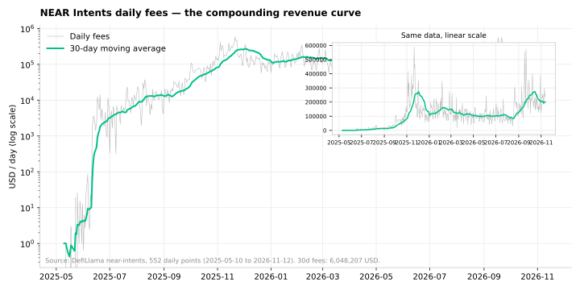
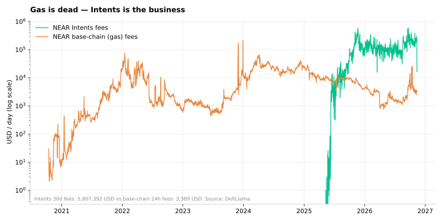
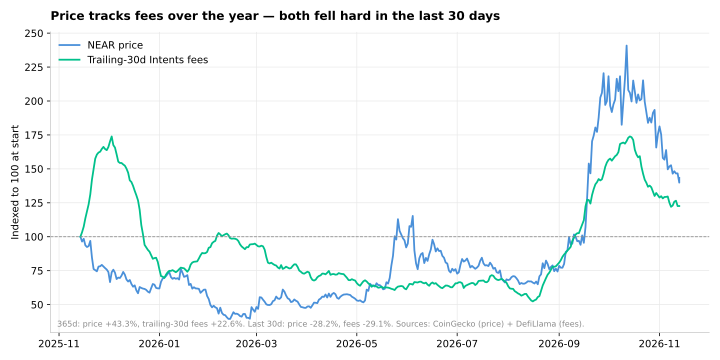
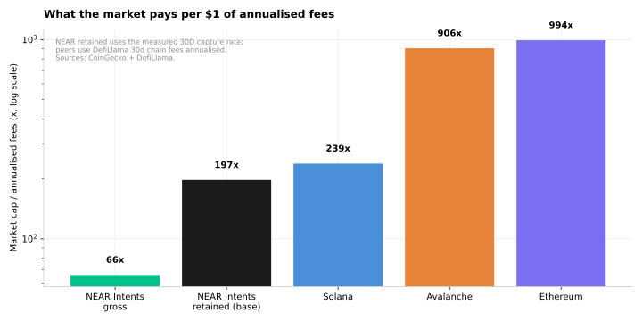
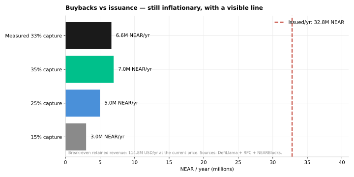
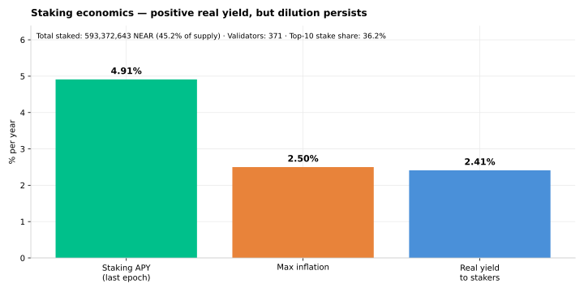
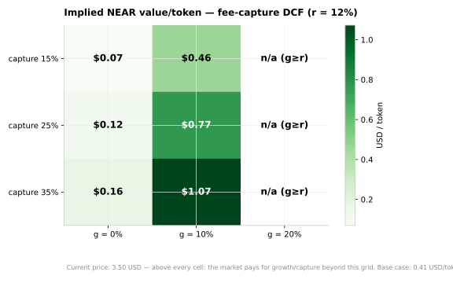
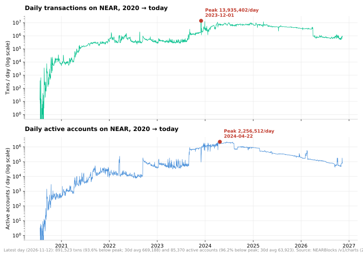
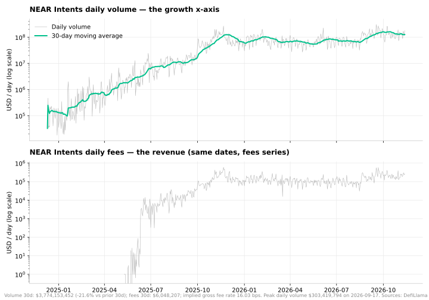
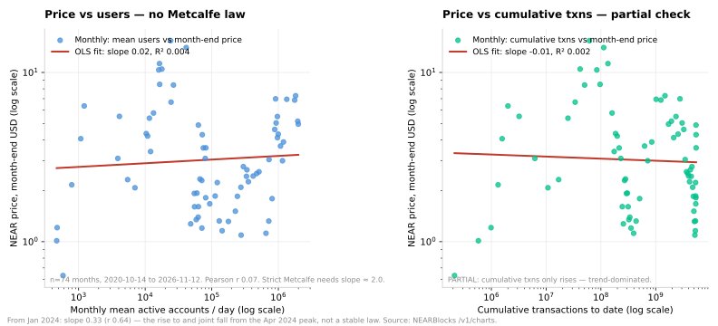

NEAR’s base layer barely earns anything — its Intents layer already grossed $5,807,392 of fees in 30 days, keeps a growing share for NEAR buybacks, and is the only part of NEAR with a compounding, measurable revenue curve. The long-term investment case is not “cheap fast L1” but “toll road on cross-chain volume”: value NEAR on retained Intents revenue (fee-capture DCF), with base-layer usage and staking economics as the supporting chapters that test whether the toll road has a moat.
Data fetched 2026-11-13T10:05:42Z (see per-chart source lines).
Reproduce it: python3 src/fetch.py && python3 src/build.py && python3 src/build_dashboard.py.
All figures trace to cached API responses in data/raw/ or to labelled
assumptions in src/assumptions.yaml. Nothing here is investment advice.
| Catalyst | What it would do | What to watch (live metric) |
|---|---|---|
| AI-agent cross-chain execution | Agents settle through Intents; gross volume grows without NEAR needing new human users | Intents volume (M₁₅) + capture (M₃) rising while base-layer accounts stay flat |
| Chain Signatures expansion | More chains/assets route through Intents via NEAR MPC signatures — same toll, wider road | New chains/assets in Intents volume; 30d volume vs the $3B P₄ bar |
| SwapKit concentration mitigation | More routing providers diversify flow; F₃ (single-provider outage) gets less likely | SwapKit share of observed 1Click volume falling from 34.1% |
| New retained-fee mechanisms | B2B + quote improvement already add ~14pp; new mechanisms lift capture toward the 35.97% P₂ bar | M₄ mechanism split; 7d capture recovering toward the 30d rate |
Value = R₁ ÷ (r − g), where R₀ = trailing-30d Intents gross fees × 12 ×
capture rate, R₁ = R₀ × (1 + g), and value per token = Value ÷ circulating
supply (1,249,836,992 NEAR). Base case:
R₀ = $23,255,121/yr, R₁ = $25,580,633,
equity value $511.61M →
$0.4093/token at r=15%, g=10%, measured capture 33.4%.
The 10% growth rate is a forward assumption (see
src/assumptions.yaml), not a trend extrapolation: trailing-30d fees
are down -29.1% vs the prior 30 days and the
365-day log-regression growth is ≈ −0.7%. The full-series log-regression is
dominated by the May–Aug 2025 launch ramp ($1/day → ~$200k/day) and is
not quoted anywhere in this thesis as a growth rate.
NEAR Intents daily fees, 10 May 2025 – 12 Nov 2026 (552 days, log scale) with a 30-day moving average.

Takeaway: Fees grew from $1/day at launch to a 7-day average of about $206,697/day — but they are volatile, not a smooth ramp. Trailing-30d fees are $5,807,392, -29.1% vs the prior 30 days, 38.3% vs a year ago, and -29.5% below the $8,236,902 peak of 2026-10-14.
Source: https://api.llama.fi/summary/fees/near-intents?dataType=dailyFees · fetched 2026-11-13T10:05:15Z
NEAR Intents daily fees vs NEAR base-layer gas fees, same log axis.

Takeaway: Intents grossed $5,807,392 in 30 days while base-chain gas earned $3,389 in 24 hours ($18,396,387 all-time). Intents 30d fees are 57.1× one day of base fees. Gas is not the business — Intents is.
Source: https://api.llama.fi/summary/fees/NEAR?dataType=dailyFees · fetched 2026-11-13T10:05:16Z
NEAR price (CoinGecko, 365 days) vs trailing-30d Intents fees, both indexed to 100 at the start of the window.

Takeaway: Over 12 months the price is up 43.3% and trailing-30d fees are up 22.6% — but in the last 30 days both fell hard: price -28.2%, fees -29.1%. Recently they move together, not apart; the divergence is a 30-day drawdown, not a decoupling.
Source: https://api.coingecko.com/api/v3/coins/near/market_chart?vs_currency=usd&days=365 · fetched 2026-11-13T10:05:06Z
Market cap ÷ annualised fees for NEAR (Intents gross and retained) vs Solana, Avalanche and Ethereum chain fees.

Takeaway: On gross Intents fees NEAR is the cheapest of the four (65.9× vs Solana 238.8×, Avalanche 905.6×, Ethereum 993.7×). On retained revenue — the money NEAR actually keeps — it is 197.5×. Cheap on gross, expensive on retained: the gap is the capture rate.
Source: https://api.llama.fi/overview/fees · fetched 2026-11-13T10:05:31Z
NEAR bought per year from retained revenue (three capture scenarios plus the measured rate) vs NEAR issued per year at the 2.5% cap.

Takeaway: At the measured 33.4% capture, retained revenue buys 6,644,320 NEAR/yr against 32,789,356 NEAR/yr issued — a net increase of 26,145,036 NEAR/yr. NEAR turns net-deflationary only when retained revenue reaches $114.76M/yr, 4.9× today.
Source: https://rpc.mainnet.near.org#EXPERIMENTAL_protocol_config · fetched 2026-11-13T10:05:40Z
Last-epoch staking APY vs the 2.5% max-inflation cap, total staked and validator concentration.

Takeaway: Stakers earn 4.91% APY against 2.50% maximum inflation — a 2.41 percentage-point real yield. Non-stakers dilute 2.50% a year. 593,372,643 NEAR (45.2% of supply) is staked across 371 of 742 validators; the top 10 hold 36.2% of stake.
Source: https://api.nearblocks.io/v1/validators · fetched 2026-11-13T10:04:57Z
Implied NEAR value per token across capture rate (15/25/35%) × perpetual fee growth (0/10/20%) at a 12% discount rate.

Takeaway: No cell in the grid reaches the current $3.50 price — the best valid cell (35% capture, 10% growth, r=12%) is $1.07. The market is paying for fee growth and/or capture beyond this grid. Cells where growth meets or exceeds the discount rate are invalid in a Gordon model and shown as n/a.
Source: Model output — data/processed/sensitivity.json · fetched 2026-11-13T10:05:42Z
Daily transactions and daily active accounts on NEAR, Jul 2020 – today (2,306 daily points, log scale), with all-time peaks marked.

Takeaway: Both series are far below their peaks: 891,523 txns on 2026-11-12 vs a peak of 13,935,402 on 2023-12-01 (93.6% below peak; 30d average 669,188, -23.1% vs the prior 30 days), and 85,370 active accounts vs a peak of 2,256,512 on 2024-04-22 (96.2% below peak). New accounts are slowing too: 287,996 in the last 30 days vs 344,576 the 30 days before (-16.4%). This is the honest bear leg of the thesis: base-layer usage has collapsed from its peaks even while Intents fees grew — the toll road's moat is the Intents product, not base-layer activity.
Source: https://api.nearblocks.io/v1/charts · fetched 2026-11-13T10:04:59Z
NEAR Intents daily swap volume (DefiLlama dexs) and daily fees (DefiLlama fees), Dec 2024 – today, log scale.

Takeaway: Intents volume was $3.77B in the last 30 days (-21.6% vs the prior 30 days; peak single day $303.42M on 2026-09-17), against $5,807,392 of gross fees — an implied gross fee rate of 15.39 bps. Volume and fees are the same story told twice: fees are volume × the fee rate, so the DCF's growth assumption is really a bet on volume compounding at roughly this fee rate.
Source: https://api.llama.fi/summary/dexs/near-intents · fetched 2026-11-13T10:05:23Z
NEAR price vs daily active accounts, monthly log-log (74 months, 2020-10-14 to 2026-11-12), plus the cumulative-transactions partial check.

Takeaway: On the full window the log-log slope is 0.02 (SE 0.04) with R² 0.004 — statistically zero, against the strict-Metcalfe slope of 2.0. The daily regression agrees (slope 0.01, R² 0.001, n=2,221 days). Even market cap on users gives only slope 0.19, R² 0.270. A fellow entry (NEAR Demand Ledger) reports slope 0.21, R² 0.28 on 73 months — the same disconnect, weaker on this series. Caveat, not buried: from Jan 2024 the monthly slope is 0.33 (r 0.64), the joint fall from the Apr 2024 activity peak — the relation flips sign across sub-periods, so it is not a stable law. Net: value NEAR on fees, not users.
Source: https://api.nearblocks.io/v1/charts · fetched 2026-11-13T10:04:59Z
Base-layer usage is the thesis’s bear leg, and it is now measured on a
full daily series (NEARBlocks /v1/charts, 2,306 days
from 2020-07-21): 891,523 transactions and
85,370 active accounts on 2026-11-12 — respectively
93.6% and 96.2% below
their all-time peaks (13,935,402 txns on
2023-12-01; 2,256,512 accounts on
2024-04-22). New accounts are slowing as well
(287,996 in 30 days, -16.4% vs the
prior 30). Over the last 365 days, weekly changes in NEAR’s price and in Intents fees moved together with a Pearson correlation of 0.06 (n=366 weeks; price vs base-layer gas fees: 0.56) — a co-movement, not a lead-lag result and not evidence of causation. The investment question is therefore not whether NEAR’s base layer is busy (it is not, relative to its peaks) but whether Intents volume — $3.77B in 30 days at a 15.39 bps fee rate — keeps compounding while the base layer does not.
Metcalfe’s law says a network’s value grows with the square of its users, so log(price) on log(users) should have a slope near 2.0. On the NEARBlocks daily series (2020-10-14 to 2026-11-12, 2,221 days, 74 months) it does not: the monthly slope is 0.02 (SE 0.04) with R² 0.004 and Pearson r 0.07 — statistically indistinguishable from zero. The daily regression agrees (slope 0.01, R² 0.001). Even market cap on users gives only slope 0.19, R² 0.270. Price does not track cumulative usage either (slope -0.01, R² 0.002 — a partial check, since cumulative transactions only ever rise). A fellow Investment Thesis entry, NEAR Demand Ledger, reports slope 0.21 and R² 0.28 on 73 months with the same “hypothesis is unproven” verdict — the same disconnect, weaker on this series (activity definitions move the numbers; the shared conclusion is what matters). The honest caveat: from Jan 2024 the monthly slope is 0.33 (r 0.64) — price and users have moved together more in the recent window, driven by the joint fall from the Apr 2024 activity peak. The relation flips sign across sub-periods, so it is not a stable law. The takeaway for the thesis: value NEAR on fees, not on users — the fee thesis stands on its own numbers, and no user-count story rescues the $3.50 price. Method: log(price) = a + b·log(users), month-end price vs monthly mean active accounts; 85 pre-launch zero-price rows and 11 zero-user rows (all Jul–Oct 2020) dropped before taking logs.
Committed 2026-11-10: these predictions are timestamped by the git history of PREDICTIONS.md and derived from the thesis’s own numbers — no threshold here is invented. A missed prediction counts against the thesis. That is the point: a thesis that cannot be wrong is not evidence. Live values below are as of 2026-11-13T10:05:42Z — a point-in-time read against the threshold, not the final outcome: no prediction has resolved yet (earliest resolution date 2026-12-31). Current tally: 6 on track, 1 off track, 0 not yet measurable.
| ID | Prediction | Threshold | Resolves | Live value | Status |
|---|---|---|---|---|---|
| P₁ | Intents fees recover to their November level | Trailing-30d gross fees ≥ $5,578,208 | 2026-12-31 | $5,807,392 | on track |
| P₂ | The capture rate holds its level | 30d capture rate ≥ 35.97% | 2027-01-31 | 33.37% | off track |
| P₃ | The DCF gap persists | DCF value/token < 25% of NEAR price | 2027-02-28 | 11.7% of price | on track |
| P₄ | Intents volume holds above $3B | Trailing-30d volume ≥ $3,000,000,000 | 2026-12-31 | $3,774,153,452 | on track |
| P₅ | NEAR keeps its lead over Chainflip | NEAR 30d fees ≥ 1.5× Chainflip 30d fees | 2027-01-31 | 1.95× | on track |
| P₆ | Base-layer usage stays collapsed | 30d avg daily active accounts < 100,000/day | 2027-02-28 | 63,923/day | on track |
| P₇ | The price still does not track Intents fees | Weekly Pearson |r| < 0.30 (52w, M₁₆ method) | 2026-12-31 | |r| = 0.055 | on track |
Live values are the same figures the model already computes (M₁ F₃₀, M₃ capture, base-case DCF ÷ live price, M₁₅ volume, F₃₀ ÷ Chainflip 30d fees, M₁₃ 30d-mean active accounts, |M₁₆ weekly log-change Pearson|). When a resolution date arrives, re-run the pipeline and record the outcome in PREDICTIONS.md.
Committed 2026-11-11: a thesis that cannot be wrong is not
evidence, so here are the six kill conditions. If one triggers, the thesis
(or the part of it the condition tests) is wrong and must be revised, not
defended. Live values below are as of 2026-11-13T10:05:42Z.
Current tally: 0 triggered,
6 not triggered,
0 not yet measurable. Three conditions
overlap the dated predictions on purpose: F₁ tests the same revenue base as
P₁ (at the kill level, $2M, not the November level), F₂ the same capture
rate as P₂ (at the 15% floor, not the 35.97% level), and F₄ the same
competitive lead as P₅ (at parity, not 1.5×). A prediction going off track
is a warning; a falsification condition triggering is the thesis failing.
Persistence is counted from the commitment date and re-evaluated on every
daily refresh: F₁, F₄ and F₆ are scored against the stored daily series, so
their persistence is measured, not asserted; F₂’s capture rate is a
point-in-time fetch with no stored history, so its 90-day clock is carried
forward through data/processed/falsification.json across runs;
F₃ is event-based — its live value is the Oct 1–4 2026 pause precedent, the
largest single-provider outage drop on record, re-checked when a new outage
is reported. F₅ has no persistence window by design: a single recomputation
at or above 100% is enough.
| ID | Condition | Threshold | Live value | Status |
|---|---|---|---|---|
| F₁ | Revenue base too small | Trailing-30d Intents gross fees (F₃₀) below $2,000,000 sustained for 90 consecutive days | $5,807,392 | not triggered No breach: F₃₀ $5,807,392 is above the $2,000,000 bar; 0 of 90 persistence days. |
| F₂ | Retention fails | 30d capture rate (retained ÷ gross) below 15% sustained for 90 consecutive days | 33.37% | not triggered No breach: capture 33.37% is above the 15% floor; 0 of 90 persistence days. |
| F₃ | Concentration kills the moat | A single routing-provider outage cuts observed 1Click volume by more than 50% for 7+ days | 31.6% drop — Oct 1–4 2026 pause precedent | not triggered Precedent only: the Oct 1–4 2026 pause ran 31.6% below the prior matching week — under the 50% bar. Event-based; re-evaluated when a new outage is reported. |
| F₄ | Competitive lead lost | A competitor's trailing-30d Intents fees exceed NEAR's (ratio < 1.0) for 3 consecutive months | 1.95× | not triggered No breach: NEAR leads Chainflip 1.95×; 0 of 3 persistence months. |
| F₅ | Thesis too bearish (reverse falsification) | DCF value/token at or above 100% of NEAR price | 11.7% of price | not triggered No breach: DCF value/token is 11.7% of price — far below the 100% bar. |
| F₆ | Growth story dies | Trailing-30d fees fall more than 50% from the $8,236,902 peak of 14 Oct 2026 AND 30d volume falls more than 50% vs its prior 30d, both sustained for 90 consecutive days | 70.5% of peak 78.4% of prior 30d | not triggered No breach: fees are 70.5% of peak and volume 78.4% of prior 30d — neither leg is below its 50% bar; 0 of 90 persistence days. |
Committed thresholds live in
data/falsification.json; live values are the same figures the
model already computes (M₁ F₃₀, M₃ capture, F₃₀ ÷ Chainflip 30d fees,
base-case DCF ÷ live price, F₃₀ ÷ the M₂ peak, M₁₅ volume ÷ prior-30d
volume) — except F₃, whose live value is the cited outage precedent.
Method and honesty notes: data/processed/BUILD_NOTES.md (M₁₉).
A fellow entry, NEAR Toll Audit (@swiftbotlab), corroborates this thesis’s core measurements — 35.9% capture vs our 33.4%, $22.30M/yr captured revenue vs our $23.26M/yr — but values NEAR at $2.05 base / $2.91 weighted, far above our $0.41 DCF. The gap is not a measurement dispute. It is what each model includes. Bridging our number to theirs, in dollars:
| Component | Equity value | Per token* |
|---|---|---|
| Retained-revenue DCF (this thesis) | $511.61M | $0.39 |
| + Chain value (their assumption) | $1.66B | $1.27 |
| + Exit value & horizon difference (their 5-yr model + exit) | $513.89M | $0.39 |
| = Their base case | $2.69B | $2.05 |
* Per-token figures on their 1.31B supply basis; our headline $0.41 uses CoinGecko circulating supply (1,249,836,992 NEAR). On their basis our DCF is $0.39 — a ~5% difference, disclosed, not hidden. Rival figures as published 2026-11-13; only our side refreshes with each fetch.
No parameter tweak closes the gap: the best valid sensitivity cell is $1.07, still half the rival's base case, so the difference is structural — what is included (chain value + exit value), not the parameters. The rival's base case is 62% chain value, an assumption they state themselves; our DCF is the conservative floor (retained revenue only).
And the market price implies even more under their model: $3.50 needs 63%/yr volume growth for five years (12×), or a 40× exit (7×), or a $3.90B chain value (3×).
Reverse the DCF: at r=15%, g=10%, the $3.50 price needs retained revenue of $198.84M/yr — 8.6× today’s R₀. The exact operational milestones:
| Milestone | Required | Today | Multiple |
|---|---|---|---|
| Annual Intents gross volume (at current capture + fee rate) | $387.17B/yr | $45.29B/yr | 8.5× |
| Gross fees every 30 days (at current capture) | $49.65M | $5,807,392 | 8.6× |
| Capture rate, if volume stays flat | 285% | 33.4% | impossible — over 100% |
Even at 100% capture with volume flat, the DCF ceiling is
$1.23
(35% of the price). The
$3.50 price is a bet on volume growth, not on retention. Full
arithmetic: data/processed/reverse_dcf.json.
| Chain | Price | Market cap | 30d fees | Annualised fees | Mcap / fees | TVL | Mcap / TVL |
|---|---|---|---|---|---|---|---|
| NEAR — Intents gross | $3.50 | $4.59B | $5,807,392 | $69.69M | 65.9× | $163.29M | 28.1× |
| NEAR — Intents retained (base) | $3.50 | $4.59B | $5,807,392 | $69.69M | 197.5× | $163.29M | 28.1× |
| Solana | $80.18 | $47.43B | $16,550,289 | $198.60M | 238.8× | $11.27B | 4.2× |
| Avalanche | $8.35 | $3.73B | $342,830 | $4.11M | 905.6× | $1.22B | 3.0× |
| Ethereum | $1,943.33 | $237.50B | $19,918,404 | $239.02M | 993.7× | $88.15B | 2.7× |
NEAR “retained” uses annualised retained revenue
($23.26M/yr) in place of annualised fees, so its mcap/fees reads
197.5×. Peer chain fees are DefiLlama 30d totals annualised — the same
methodology for all four chains, but DefiLlama chain-fee totals can undercount
vs other methodologies (e.g. Solana’s total here is far below figures that
include all validator/Jito revenue). Use for relative ranking within this
dataset, not as absolute revenue. NEAR TVL is the DefiLlama historical-series
last point (2026-11-13, $163.29M); the
DefiLlama /chains headline for NEAR ($350.78M)
disagrees — different inclusion methodology, recorded in
data/processed/benchmarks.json.
| Protocol | 30d fees | 7d fees | 24h fees |
|---|---|---|---|
| NEAR Intents | $5,807,392 | $1,446,879 | $16,604 |
| Chainflip | $2,970,860 | $605,924 | $144,202 |
| deBridge | $458,930 | $116,041 | $14,920 |
| THORChain | $18,421 | $7,819 | $700 |
Sources: DefiLlama summary/fees/{thorchain,chainflip,debridge},
fetched 2026-11-13T10:05:17Z. LI.FI was tested and dropped:
DefiLlama returns 404 (“Fees for lifi not found”). THORChain’s 30d
figure is only $18,421 — its fee series is
thin on DefiLlama; do not over-claim from it. On this dataset NEAR Intents
grosses about 2.0× Chainflip’s 30d fees.
Capture rate × perpetual fee growth, at a fixed 12% discount rate (Chart 7). Base case ($0.41) sits outside this grid: it uses the measured 33.37% capture at r=15%, g=10%.
| Capture ↓ / Growth → | 0% | 10% | 20% |
|---|---|---|---|
| 15% | $0.07 | $0.46 | n/a g ≥ r |
| 25% | $0.12 | $0.77 | n/a g ≥ r |
| 35% | $0.16 | $1.07 | n/a g ≥ r |
Cells marked n/a are the invalid g ≥ r zone: a Gordon-growth model
requires growth below the discount rate, so no value is computed there. Even
the best valid cell (35% capture, 10% growth, r=12%) is
$1.07 — well under the $3.50 price.
Full 27-cell grid (r = 10/12/15%): data/processed/sensitivity.json.
Retained ÷ gross fees by window (revenue.near.org, measured from its server-rendered payload, cross-checked against the per-mechanism split): all-time 19.2% → YTD 23.0% → 7d 26.4% → 30d 33.4%. 30d split: direct fees 19.3% + B2B 10.4% + quote improvement 3.6%. The model’s base case uses the 30d rate, not the lifetime rate.
/v1/charts endpoint (2,306 daily points from 21 Jul 2020)
gives daily transactions, active accounts and new accounts; the research-phase
claim that “no daily endpoint exists” was wrong — the bare
/v1/charts path was never tested, only suffixed paths (all 404).
Daily transactions are 93.6% below their
2023-12-01 peak and daily active accounts
96.2% below their 2024-04-22
peak. Early rows have gaps: multichain_txns is null before
14 Nov 2024 and txn_volume is null on 11 days in Jul–Aug 2020;
neither field is used in any metric.summary/dexs/near-intents gives a daily Intents volume series
(699 points from 10 Dec 2024), so the growth story finally has its own x-axis:
$3.77B in 30 days, implying a
15.39 bps gross fee rate. The volume series
starts Dec 2024, not at the May 2025 fee-series start — the two series cover
different windows, and the endpoint’s own 30d total
($3.77B) differs slightly from the sum of the
last 30 daily points because its rolling window ends at fetch time, after the
last daily point.data/manifest.json and the README.